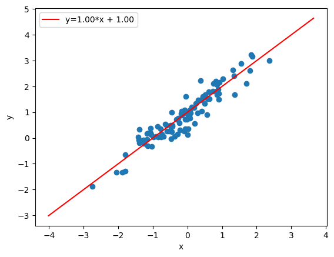
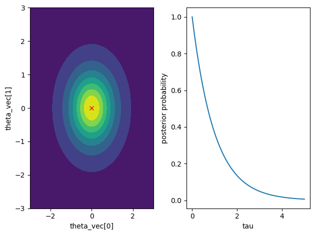
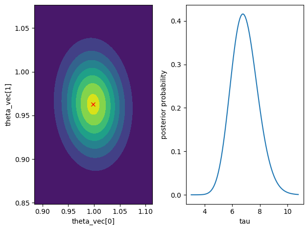

Your First Library for Bayesian Machine Learning#
BayesMLは，ベイズ統計学やベイズ決定理論に基づく機械学習の教育，研究，活用を促進し，社会に広く貢献することを目的としたライブラリです．
Characteristics#
Easy-to-use:
You can use pre-defined Bayesian statistical models by simply importing it. You don't need to define models yourself like PyMC or Stan.
Bayesian Decision Theoretic API:
BayesML's API corresponds to the structure of decision-making based on Bayesian decision theory. Bayesian decision theory is a unified framework for handling various decision-making processes, such as parameter estimation and prediction of new data. Therefore, BayesML enables intuitive operations for a wider range of decision-making compared to the fit-predict type API adopted in libraries like scikit-learn. Moreover, many of our models also implement fit-predict functions.
Model Visuialization Functions:
All packages have methods to visualize the probabilistic data generative model, generated data from that model, and the posterior distribution learned from the data in 2~3 dimensional space. Thus, you can effectively understand the characteristics of probabilistic data generative models and algorithms through the generation of synthetic data and learning from them.
Fast Algorithms Using Conjugate Prior Distributions:
Many of our learning algorithms adopt exact calculation methods or variational Bayesian methods that effectively use the conjugacy between probabilistic data generative models and prior distributions. Therefore, they are much faster than general-purpose MCMC methods and are also suitable for online learning. Although some algorithms adopt MCMC methods, but they use MCMC methods specialized for each model, taking advantage of conjugacy.
News#
Our algorithm for the meta-tree model has been accepted to AISTATS 2025! For more details, please see the links below.
Installation#
Please use the following command to install BayesML.
pip install bayesml
The following are required.
Python (>= 3.7)
NumPy (>= 1.20)
SciPy (>= 1.7)
MatplotLib (>= 3.5)
Scikit-learn (>= 1.1)
Tutorial#
Each model in BayesML has two classes. One is GenModel, which can be used for parameter generation from prior or posterior distributions, and data generation. The other is LearnModel, which can be used for estimating posterior distributions from data and calculating predictive distributions. Each has an API that aligns with Bayesian decision theory. Let's look at how to use each with the linearregression model as an example.
Synthetic Data Generation with GenModel#
First, let's import the library.
import numpy as np
from bayesml import linearregression
Next, we create an instance of the probabilistic data generative model. Here, we specify the dimension of the regression coefficients (including the constant term) as c_degree=2 as a constant of the model, and we specify the regression coefficients as theta_vec = np.array([1,1]) and the precision (inverse of variance) of the noise term as tau = 10 as parameters.
gen_model = linearregression.GenModel(
c_degree = 2, # degree
theta_vec = np.array([1,1]), # coefficients
tau = 10, # noise precision
)
You can visualize the characteristics of the created model by the following method.
gen_model.visualize_model()
Output:
theta_vec:[1. 1.]tau:10.0
To generate a sample and save it to variables x and y, we use the following method:
x,y = gen_model.gen_sample(sample_size=100)
Let's also generate test data for later use.
x_test,y_test = gen_model.gen_sample(sample_size=100)
Learning and Decision Making with LearnModel#
Let's use LearnModel to learn a model from the data we just generated.
Of course, the data that can be used with LearnModel is not limited to data generated from GenModel. You can analyze various real-world data.
First, let's create an instance of the learning model. Here, we only specify the degree c_degree = 2 as a constant of the model, but you can also specify hyperparameters for the prior distribution.
learn_model = linearregression.LearnModel(
c_degree = 2, # degree
)
A method for visualizing the posterior distribution of parameters is implemented in LearnModel. If you visualize the posterior distribution at this point, the prior distribution will be displayed since learning from data has not yet been performed.
learn_model.visualize_posterior()
Output:

To update the posterior distribution through learning from data, we use the following method.
learn_model.update_posterior(x,y)
If you visualize the updated posterior distribution, you can see that the density of the posterior distribution has moved closer to the true parameters used to generate x and y.
learn_model.visualize_posterior()
Output:

To make decisions such as parameter estimation and prediction of new data based on the learned model, we proceed as follows.
For parameter estimation, we use the estimate_params method. By specifying the loss option as squared, you can obtain an estimate that minimizes the Bayes risk function based on the squared error loss function. The resulting value is the expected value of the posterior distribution.
learn_model.estimate_params(loss="squared",dict_out=True)
Output:
{'theta_vec': array([0.99846525, 0.96263024]), 'tau': 6.9036925167513195}
If you specify the loss option as abs, you can obtain an estimate that minimizes the Bayes risk function based on the absolute error loss function. The resulting value is the median of the posterior distribution, which is why the estimated value of tau differs from the previous one.
learn_model.estimate_params(loss="abs",dict_out=True)
Output:
{'theta_vec': array([0.99846525, 0.96263024]), 'tau': 6.858623148933392}
To predict new data, we first use the following method to calculate the predictive distribution for new explanatory variables.
learn_model.calc_pred_dist(x_test)
Next, we use the make_prediction method to obtain predicted values. Similar to parameter estimation, you can specify the loss function using the loss option. (In this example, the same predicted values will be returned whether you assume squared error loss or absolute error loss since the posterior predictive distribution is symmetrical.)
y_pred = learn_model.make_prediction(loss="squared")
Let's calculate the mean squared error.
mse = np.sum((y_test - y_pred)**2) / len(y_test)
print(f"MSE: {mse}")
Output:
MSE: 0.09020880284291456
Taking into account that the precision (inverse of variance) of the noise term used for data generation was 10, we can see that the predictions are achieved with sufficient accuracy.
Sampling from Posterior Distribution Using GenModel#
GenModel can also be used to sample parameters from the posterior distribution learned by LearnModel, or to sample new data from the posterior predictive distribution.
First, the hyperparameters of the posterior distribution learned by LearnModel can be obtained as follows.
hn_params = learn_model.get_hn_params()
print(hn_params)
Output:
{'hn_mu_vec': array([0.99846525, 0.96263024]), 'hn_lambda_mat': array([[ 99.87503339, 5.96145913], [ 5.96145913, 101. ]]), 'hn_alpha': 51.0, 'hn_beta': 7.387351026461872}
By passing these to GenModel, you can sample parameters from the posterior distribution.
We create a new GenModel instance for parameter sampling and pass the hyperparameters through the set_h_params method. (In the example below, we are unpacking the values of the dictionary hn_params using * for hn_params.values(). This is a Python feature, not a BayesML functionality.)
posterior_gen_model = linearregression.GenModel(
c_degree = 2, # degree
)
posterior_gen_model.set_h_params(*hn_params.values())
We use the gen_params method to generate parameters and the get_params method to retrieve the generated parameters. If you want to perform multiple samplings, please repeat the following in a for loop.
posterior_gen_model.gen_params()
print(posterior_gen_model.get_params())
Output:
{'theta_vec': array([1.00935782, 0.93804208]), 'tau': 5.50775630793475}
To sample new data from the posterior predictive distribution, we generate data after sampling parameters. When we generated the synthetic data, we did not provide explanatory variables as arguments to gen_sample (see [here](#synthetic-data-generation-with-genmodel)), but you can also specify them explicitly as follows.
posterior_gen_model.gen_params()
_,y_new = posterior_gen_model.gen_sample(x=x_test[:10])
print(f"y_new: {y_new}")
Output:
y_new: [-0.49532975 2.03473075 1.13758759 -0.46735058 -0.71902336 -0.09288005 0.89463227 2.07886012 2.81211771 1.60020635]
Package list#
The following packages are currently available. In this library, a probabilistic data generative model, prior distribution, posterior distribution (or approximate posterior distribution), and predictive distribution (or approximate predictive distribution) are collectively called a model.
In the future, we will add packages to deal with more complicated hierarchical models.
Citation#
When you use BayesML for your academic work, please provide the following bibliographic reference.
Plain text
Y. Nakahara, N. Ichijo, K. Shimada, Y. Iikubo,
S. Saito, K. Kazama, T. Matsushima, BayesML Developers, ``BayesML,''
Python package version 0.3.1,
[Online] https://github.com/bayesml/BayesML
BibTeX
@misc{bayesml,
author = {Nakahara, Yuta and Ichijo, Naoki and Shimada, Koshi and
Iikubo, Yuji and Saito, Shota and Kazama, Koki and
Matsushima, Toshiyasu and {BayesML Developers}},
title = {{BayesML}},
howpublished = {Python package version 0.3.1},
note = {\url{https://github.com/bayesml/BayesML}},
year = {2025}
}